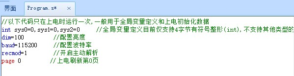

主动解析基本知识
警告
如果对串口屏不熟悉,请谨慎使用主动解析（也叫自由协议/自由格式通讯）。
淘晶驰字符串指令和主动解析
什么是淘晶驰字符串指令
n0.val=100
t0.txt="abc"
covx n0.val,t0.txt,0,0
类似上面的这些字符串指令，可以直接写在屏幕中，或者通过串口发送给串口屏的字符串指令，称为淘晶驰字符串指令。
屏幕上电默认是淘晶驰字符串指令模式，所有串口指令需按照淘晶驰字符串指令格式来对屏幕进行操作，即单片机发送类似于n0.val=100的字符串指令格式来控制屏幕。
假如你需要自定义协议，不按照淘晶驰字符串指令格式来发串口数据给屏幕，而使用你自定义的格式，那么就需要把屏幕配置为主动解析模式。要使用此功能，请务必确保你有以下2点基础：
1.明白什么叫HEX,什么叫String,什么叫ASCII,分别什么关系，怎么转换。
2.明白单字节数值，双字节数值，四字节数值，分别有什么区别，它们在内存中是什么样的储存方式，明白什么叫小端模式，什么叫大端模式，大小端数据之间如何转换。
如果以上2点你都比较明白，那么请继续往下看，否则强烈建议不要再继续往下看了，因为大多数的项目是用不上这个功能的，使用默认的被动解析模式就可以了，没必要配置为下面的主动解析模式。
此篇幅涉及到以下几个内容:
主动解析原理
用户在定时器控件中手动解析串口缓冲区中的数据。
如果把串口屏比喻成人，串口缓冲区是电子邮箱，定时器是闹钟。
那就是闹钟定时提醒人去查看电子邮箱中接收到了什么邮件，并且根据电子邮箱中不同的数据做出不同的操作。(通过定时器去访问串口缓冲区数据组u[index])
为了确保邮件是发给你的，你必须确认这些邮件是以”亲爱的XX”开头,并以”此致敬礼”结尾的(有帧头和帧尾)
某些情况下为了确保邮件信息是正确的,你们还需要对暗号(即增加校验)
电子邮箱的大小是有限的，需要根据情况将已读的数据删除或者清空邮箱。(对应udelete和code_c)
主动解析基本步骤
在program.s中配置波特率baud和开启主动解析 recmod=1
每个页面都需要新建一个定时器控件,在定时器中定时判断usize的大小，当usize大于等于一帧数据的长度时，进入查找帧头标志或帧尾标志流程
注意
每个页面仅建议在一个定时器中读取串口缓冲区的数据,在多个定时器中读取串口缓冲区的数据容易照成逻辑混乱。
查找到帧头标志或帧尾标志后，如果有校验，对数据进行校验
校验不通过，丢弃该帧（删除对应长度的数据）
校验通过，则提取串口缓冲区中需要的数据
每次读完数据后，使用udelete指令删除缓冲区中已经读取的字节数，否则缓冲区溢出后就无法接收新数据。
串口数据解析模式系统变量recmod
recmod=0为被动解析模式，recmod=1为主动解析模式
屏幕上电recmod=0，即被动解析模式，在此模式下，外部设备按照标准指令集的指令格式发送串口指令给屏幕执行；例如:n0.val=100
如果你将recmod 设置为1，那么屏幕进入主动解析模式，然后所有的串口指令都不会被执行(注意：是串口接收到的数据不会被执行，上位软件编辑界面时写入事件中的固件指令是不会受影响的，依然正常执行)，所有的串口数据均存放在串口缓冲区中，等待您去主动读取和处理。

具体配置代码如下，请注意，page指令后面的代码不会被执行，请将代码写在page指令前面
//以下代码只在上电时运行一次,一般用于全局变量定义和上电初始化数据
int sys0=0,sys1=0,sys2=0 //全局变量定义目前仅支持4字节有符号整形(int),不支持其他类型的全局变量声明,如需使用字符串类型可以在页面中使用变量控件来实现
dim=100 //配置亮度
baud=115200 //配置波特率
recmod=1 //开启主动解析
page 0 //上电刷新第0页
注意
用上位机软件模拟器联机屏幕，屏幕将会强制退出主动解析模式，此时需要将屏重新上电才可以正常和模拟器联机调试屏幕。
警告
请不要在定时器中频繁进入recmod=1，否则将会导致工程下载失败，此时只能通过SD卡更新工程，请参考 通过SD卡下载工程到串口屏
串口缓冲区数据大小系统变量usize
usize只能读取，不可设置
读取此变量可以知道当前串口缓冲区已经缓存多少数据。
定时器里每次进入解析之前，必须先判断usize的值大于1个数据帧的长度，才能进入正常的解析！！！
串口缓冲区数据组u[index]
串口缓冲区数据组的写法为u[index] (index为序号)
注意
任何时间读取串口缓冲区数据组u[index]时一定要先判断uszie的大小!
例1：对缓冲区中的数据进行判断（通常用于判断帧头帧尾）
if(usize>0&&u[0]!=0x55&&u[1]!=0xAA)
{
udelete 1
}
X2/X3/X5的串口缓冲区是 4k 字节，u数组的索引范围是u[0]~u[4095]
T0/T1/K0的串口缓冲区是 1k 字节，u数组的索引范围是u[0]~u[1023]
例2：将串口缓冲区的所有数据返回
if(usize>0)
{
for(sys0=0;sys0<usize;sys0++)
{
prints u[sys0],1
}
code_c
}
串口缓冲区数据拷贝指令ucopy
格式: ucopy,att, srcstar, lenth, decstar
说明：将串口缓冲区中的数据拷贝到变量中(recmod=1模式下有效)
att:目标变量名称
srcstar:串口缓冲区数据起始位
lenth:拷贝长度
decstar:目标变量数据起始位
此指令可以从串口缓冲区的指定位置连续拷贝指定数量的数据到目标变量(目标变量可以是字符串变量，可以是数值变量)。
例1：从缓冲区中0位置开始获取一个4字节的数值(小端模式，低位在前)，赋值给数字控件n0, 写法如下:
ucopy n0.val,0,4,0
注意
每个数值变量都是有符号的32位类型，但是如果你使用ucopy从缓冲区获取小于4字节的数值，一定要注意剩余部分的字节数据处理，以免出现数据异常，操作方法请参考下面这个例子：
例2: 从缓冲区中0位置开始获取一个2字节的有符号数值(小端模式，低位在前)，赋值给数字控件n0.val的低16位, 写法如下:
sys0=0 //需要将sys0赋值为0,否则如果sys0的高字节有数据,那么获取的数据就会和你想要的数据不符
ucopy sys0,0,2,0
if(sys0>32767)
{
n0.val=sys0-65536
}else
{
n0.val=sys0
}
例3: 从缓冲区中0位置开始获取一个1字节的有符号数值(小端模式，低位在前)，赋值给数字控件n0.val的低8位, 写法如下:
sys0=0 //需要将sys0赋值为0,否则如果sys0的高字节有数据,那么获取的数据就会和你想要的数据不符
ucopy sys0,0,1,0
if(sys0>127)
{
n0.val=sys0-256
}else
{
n0.val=sys0
}
参考链接：
注意
先将sys0赋值为0，目的在于确保sys0的4个字节全置0，然后再从缓冲区拷贝2个字节进来，否则会因为你只拷了2字节而导致sys0原来剩下的2字节数据还在，然后导致sys0最终的数值并不是你想要的数值。
例4: 从缓冲区中0位置开始获取一个10字节的字符串，赋值给文本控件t0, 写法如下:
ucopy t0.txt,0,10,0
删除缓冲区前面N字节数据udelete
格式: udelete nsize
说明：删除缓冲区前面N字节数据(recmod=1模式下有效)
nsize:需要删除的字节数
例1：删除串口缓冲区前面8个字节数据, 写法如下:
udelete 8
例2：删除串口缓冲区前面多个字节数据, 写法如下:
n0.val=8
udelete n0.val
例3：删除串口缓冲区前面多个字节数据, 写法如下:
frameLength=8
udelete frameLength
例4：删除串口缓冲区所有数据, 写法如下:
udelete usize
使用udelete删除数据时,只是修改了usize的值,并移动了串口环形缓冲区的指针，并不会真正的删除数据，下次再读取数据时，会从新指向的位置开始读取。
因此,每次解析数据前需要判断usize的值是否大于等于1个数据帧的长度,然后再进行解析。
如何退出主动解析
方法1：发送一串退出密码来实现退出主动解析模式,退出密码为一串24字节的字符串+3字节的结束符。
24字节的字符串:
DRAKJHSUYDGBNCJHGJKSHBDN (固定的字符串数据，不可修改，必须大写)
3字节的结束符(Hex数据)：
0xff 0xff 0xff
合计27字节
其hex格式如下所示：44 52 41 4B 4A 48 53 55 59 44 47 42 4E 43 4A 48 47 4A 4B 53 48 42 44 4E FF FF FF
方法2：增加一个主动解析指令，接收到对应的指令后执行recmod=0